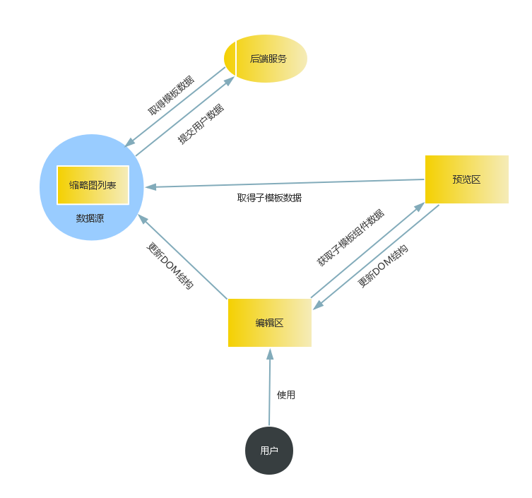

需求描述
在PC上提供一个界面，用户可以根据预设的多样化的模板进行简单的编辑操作，生成风格迥异的微系列H5页面，可以更加全面的满足微系列用户移动营销的需求。
实现思路
H5模板标准模板组成部分
- 页面头部（meta标签、title、引用的样式文件、domain设置等）
- 页面公共组件容器（音乐按钮，loading页面，箭头和一些按钮等）
- 页面列表容器（子页面模板，有众多子模板）
- 底部公共js脚本
模板页结构示例
子模板组成部分和结构
- 每个子模板由一对
<section></section>标签定义 - 每个子模板的背景图片支持更换，为自定义属性
bg-rel - 用自定义属性
subtemplateid来标识每一个子模板 - 每个子模板上有多个组件，由公共类名
widget来标识。 - 每个子模板的样式写成内联方式（方便以后扩展）
- 每个子模板组件定义有特定的属性（style、data-type、model等，方便页面解析子模板生成对应编辑框）
子页面组件化
组件即一个可以独立运行的单元，提高代码的复用性
模板页的每一页就是一个组件，可以提出来拿到别处运行
模板页，模板子页和用户作品的关系
PC编辑器
可简单编辑标题和段落文字，背景图、标题和段落的动态效果等则预先设定，无法修改。后期可扩展为可修改背景图和动态效果等。
模块

架构设计
数据绑定
模块划分
css模块划分
js模块划分
模块依赖关系
可优化的点
- 首屏数据展示
- 按点击顺序添加页面
- 使用更便捷的框架来实现（Vue.js or React.js）
模块化开发
- 模块化规范-AMD
- RequireJS
模块化规范
- AMD
- CMD
- CommonJS
- ECMAScript 6模块化
AMD模块化语法
define(
module_id /*字符串，可选*/,
[dependencies] /*数组，可选*/,
factory /*用来模块初始化的函数或对象*/
);
说明：
- module_id 字符串。它指的是定义中模块的名字，可选。如果没有提供该参数，模块的名字应该默认为模块加载器请求的指定脚本的名字；一般情况下，不用写。
- [dependencies] 数组。定义中模块所依赖模块的数组。依赖参数是可选的，如果忽略此参数，它应该默认为["require", "exports", "module"]。
- factory function函数或对象。factory，为模块初始化要执行的函数或对象。如果为函数，它应该只被执行一次。如果是对象，此对象应该为模块的输出值。 如果是函数，函数的参数是取决于[dependencies]数组，参数依次是依赖数组里面定义的参数，顺序也是按照依赖数组的顺序。
举例说明：
//foo.js
define([],function(){
console.log("foo.js");
function test(){
console.log("test()");
}
});
//bar.js
define([],function(){
console.log("bar.js");
});
//dep.js
define(["foo"],function(foo){
console.log("dep.js");
foo.test();
});
//main.js
define(["bar","dep"],function(bar,dep){
console.log("main.js");
});
require
require(
[dependencies] /*数组*/,
action function /*用来执行逻辑的函数,可选*/
);
说明：
- [dependencies] 数组。依赖的模块的数组，每一个数组成员是一个依赖模块的名字
- action function 函数。需要执行逻辑的函数，函数参数是依赖模块，顺序按照依赖数组的顺序。
举例说明：
require(['pkg/wyx/wyx_pcedit'],function(wyx_pcedit){
wyx_pcedit.test();
});
//或
require(['pkg/wyx/wyx_pcedit']);
RequireJS
RequireJS是一个非常小巧的JavaScript模块载入框架，是AMD规范最好的实现者之一
正常编写方式
index.html
<!DOCTYPE html>
<html>
<head>
<script type="text/javascript" src="a.js"></script>
</head>
<body>
<span>body</span>
</body>
</html>
a.js
function fun1(){
alert("it works");
}
fun1();
可能你更喜欢这样写：
(function(){
function fun1(){
alert("it works");
}
fun1();
})()
这样写会出现JS阻塞浏览器渲染的问题！
requirejs写法
index.html
<!DOCTYPE html>
<html>
<head>
<script type="text/javascript" src="require.js"></script>
<script type="text/javascript">
require(["a"]);
</script>
</head>
<body>
<span>body</span>
</body>
</html>
a.js
define(function(){
function fun1(){
alert("it works");
}
fun1();
})
使用requirejs的优点
- 防止js加载阻塞页面渲染
使用程序调用的方式加载js，防出现如下丑陋的场景:
<script type="text/javascript" src="a.js"></script> <script type="text/javascript" src="b.js"></script> <script type="text/javascript" src="c.js"></script> <script type="text/javascript" src="d.js"></script> <script type="text/javascript" src="e.js"></script> <script type="text/javascript" src="f.js"></script> <script type="text/javascript" src="g.js"></script> <script type="text/javascript" src="h.js"></script> <script type="text/javascript" src="i.js"></script> <script type="text/javascript" src="j.js"></script>
模块化的好处
- 可以快速定位问题所在。
- 灵活架构，焦点分离
- 方便打包合并文件
- 方便模块间组合、分解
- 方便单个模块功能调试、升级
- 多人协作互不干扰